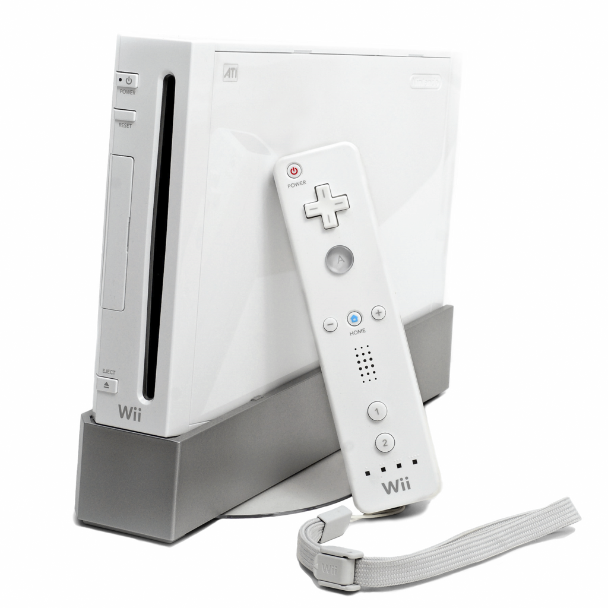
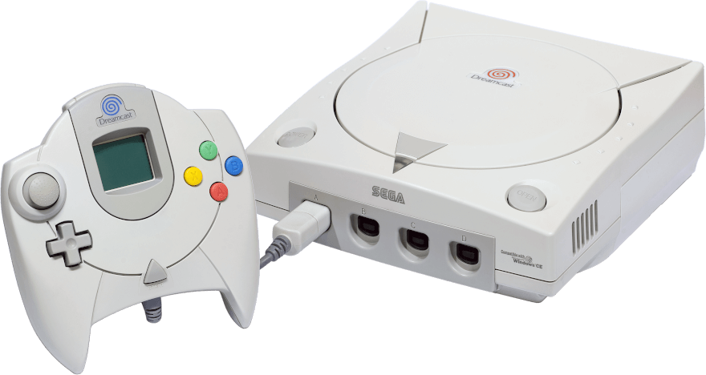
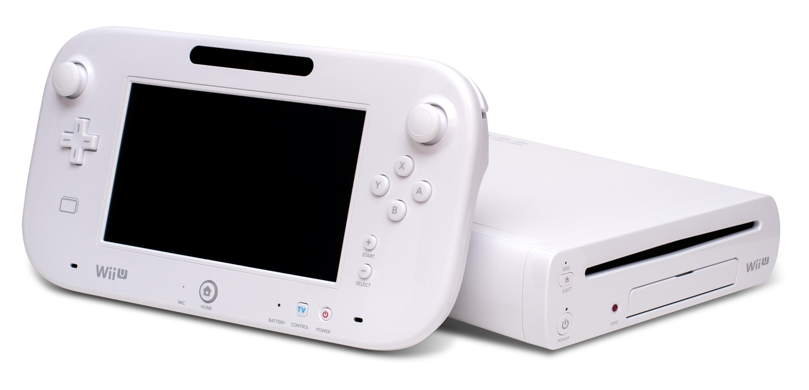
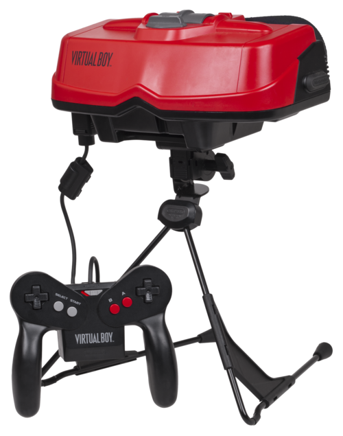

Nintendo Wii
The Nintendo Wii is probably one of the most well known consoles. It's 20 years old! If you don't know it, here's a photo.
The Nintendo Wii sold an amazing 101.63 million units!

It was a console made by Nintendo that used mostly motion controls for games. Speaking of games for the Nintendo Wii there are 2,629 games for it, some released this year!
The top 3 best selling Wii games are Wii Sports, Mario Kart Wii and Wii Sports Resort.
Sega Dreamcast
The Sega Dreamcast released in 9.9.1999 is not as well known like the Wii.
The Sega Dreamcast is the last sega console ever made. (Atleast for right now.)

It was a console made by Sega that was the first ever 128-bit console and also introduced online gaming!.
The top 3 best selling Dreamcast games are Sonic Adventure, Resident Evil Code: Veronica and Soulcalibur.
Nintendo Wii U
The Nintendo Wii U is the sequel to the Wii.
The Nintendo Wii U didn't sell very well but it's one of my favorite consoles due to it's personallity.

Like the Wii it used motion controls but it also used the Wii U Gamepad. The Wii U gamepad was a tablet like controller similar to the Nintendo Switch.
The top 3 best selling Wii U games are Mario Kart 8, Super Mario 3D World and New Super Mario Bros. U.
Nintendo Virtual Boy
Last is the Nintendo Virtual Boy.
It was a red and black virtual reality system made by Nintendo and sold horribly do to it's colors and the fact it gave headaches.

It has an interesting story behind it being developed by a company called Reflection Technology aswell as Nintendo. It worked by moving 2, 1 x 224 pixel LEDs really fast in the player's eyes with different levels of brightness making a 256 x 224 pixel game on screen.
The top 3 best selling Virtual Boy games are Virtual Boy Wario Land, Red Alarm and Galactic Pinball.